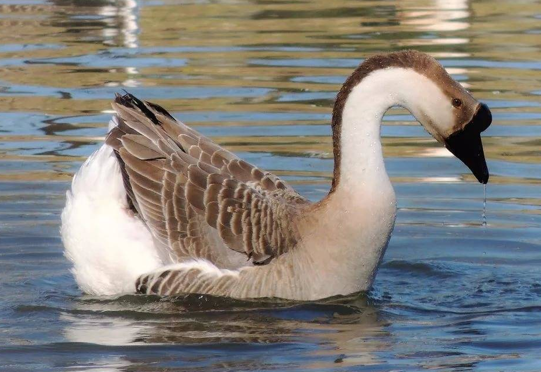
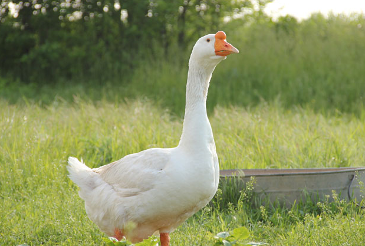
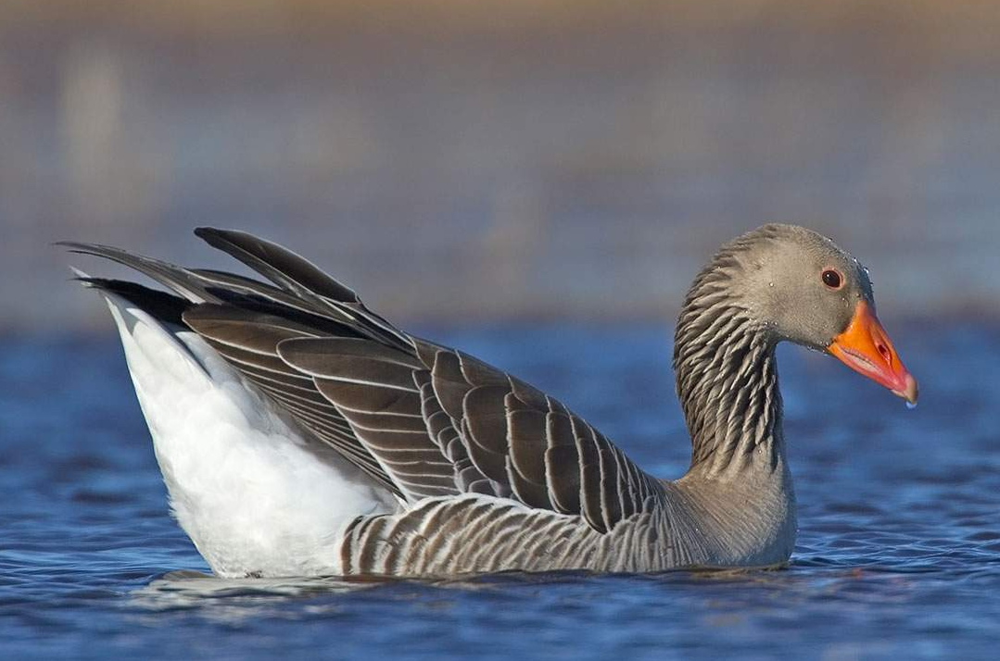
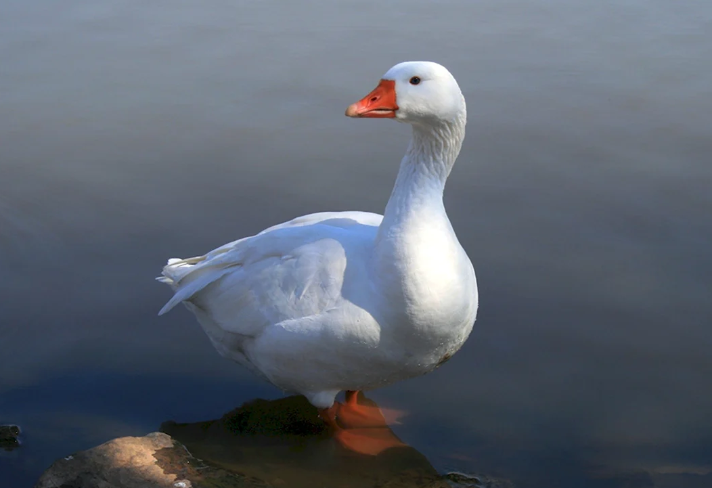

.png "Главная")
Породы гусей
В этом разделе будут рассмотрены 5 популярных пород гусей среди российских фермеров.
Кубанская

Серые кубанские гуси выращиваются в России и за ее пределами – они превзошли в популярности белый подвид. Птицы имеют тело средних размеров. Мышцы хорошо развиты. Грудь выпуклая, крылья крупные, плотно прижатые к телу. Хвост небольшой, приподнятый вверх. Шея длинная, голова крупная. Присутствует шишкообразный нарост – наследие китайских гусей. Клюв и шишка темно-аспидного цвета. Глаза коричневые. Ноги среднего размера, плюсны оранжевые.
У годовалых особей в нижней части корпуса формируется жировой запас. Оперение серое или буровато-серое. Горло, грудь и брюхо светлые. На крыльях перья темно-серые, с более светлой окантовкой. Через голову вдоль шеи проходит темная полоса. Птицы подвижные, активные – неуклюжими их не назовешь.
Линда

Гуси Линда покрыты белоснежным оперением, с подпалинами бежево-молочного оттенка. У некоторых особей имеются крапины на спине и под крыльями, но это не считается дефектом.
К особенностям породы относят:
- тело – сильное, крупное и чуть вытянутое;
- крылья — широкие, которые плотно прилегают к телу, повторяя его контуры;
- голову – округлую, крупную, переходящую в длинную и сильную шею. На лбу заметен выпуклый нарост. Клюв – оранжевого цвета, глаза – маленькие, тёмные;
- ноги – ярко-оранжевые, невысокие и мощные. Они у Линды широко поставлены и чуть смещены к задней половине туловища.
Характер птиц — дружелюбный и уравновешенный. Они в меру любопытны, общительны и совсем неагрессивны к людям, а также животным, обитающим по соседству.
Средний вес тушки взрослого самца — 8 кг, максимальный – 12. Самка продуктивного возраста весит около 7 кг.
Холмогорская

Гуси холмогорской породы появились в результате скрещивания китайской и арзамасской разновидностей. Имеется информация о том, что в селекции использовались также дикие пернатые, а ещё представители тульской породы.
В результате появились водоплавающие с:
- перьями серого и белого цвета, иногда серо-пегого;
- туловищем – крупным и тяжёлым, с выдающейся грудной частью и прямой спиной;
- двумя жировыми складки в зоне живота;
- клювом и лапами ярко-оранжевого оттенка;
- характерной кожной складкой-«кошельком» под клювом;
- округлым наростом над клювом, который появляется к полугодовалому возрасту и достигает максимальных размеров к 5 годам. У серых особей «шишка» тёмная, а у белых – ярко-оранжевая.
Крупные серые

Гусь крупный серый имеет неоднородный окрас. Голова, шея и спина темнее груди. На спине – перья с белой окантовкой в виде «чешуи». Хвост и брюхо белые.
Птица крупная, подвижная. Корпус крепкий, спина широкая длинная, живот объемный, с двумя жировыми складками. Грудь глубокая. Крылья мощные. Ноги широко поставленные, крепкие. Плюсны оранжевые. Шея мощная. У самцов она длиннее, чем у самок. Голова небольшого размера. Клюв оранжевый, с более светлым кончиком. Шишка и кошелек отсутствуют.
В спокойной обстановке характер у птиц миролюбивый, управляемый, но в случае угрозы они становятся агрессивными. Самцы могут быть очень злопамятными. Они способны постоять за себя. В опасной ситуации поднимается все стадо. Птицы общительны, поэтому бывают очень шумными.
Легарт датский

По месту выведения птицы получили название «датский легарт». Часто встречается написание «легард». Во всех случаях речь идет об одной породе.
Согласно описанию, взрослые самки и самцы породы датский легарт (легард) отличаются конституцией тела. Гуси более крепкие, форма тела у них квадратная, шея мускулистая, толстая. Гусыни изящнее, тело у них имеет вытянутую форму. По размеру они отличаются незначительно – самцы тяжелее примерно на 1 кг. Окрас у взрослых особей одинаковый – перья белые, без вкраплений. Птенцы появляются на свет с желтым пухом, на котором присутствуют темные пятнышки. После линьки окрас становится белоснежным.
Другие особенности экстерьера:
- прямая широкая спина;
- выраженная жировая складка на животе;
- небольшая голова с немного выпуклым лбом;
- голубые глаза;
- оранжевые лапы и клюв (на кончике клюва окрас белесый).